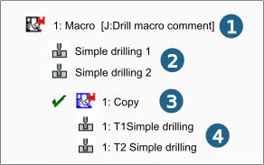

The Apply macro dialog
Specify which macros should be applied in the Apply macro dialog. Use filters to restrict or increase the number of macros displayed. The filters differ depending on whether a job-based or a feature-based macro is to be used.
Options
Use feature macros: When job-based macros are used, all feature-based macros are displayed.
Check geometry parameters: When job-based macros are used, only features that match the geometric parameters of the selected feature are displayed.
Check feature class: Only features that are allocated to the same class as the selected feature are displayed.
Check rule: Only feature-based macros, which correspond to the defined rules, are displayed.
Check frame: .When using feature-based macros, the only macros used are those which correspond to the defined frame.
Select joblist: Available if the Check frame function is activated. The target joblist is applied to the Check frame function.
Use tools from depot: Available for job-based and feature-based macros.
Select Depot The system searches for suitable tools with the following priority when performing a tool search: 1.) Tool from depot, 2.) Reference tool (the tool used in the macro) and 3.) Shortest, collision-free tool from the tool database.
Allow multiple apply: Use a feature-based macro several times.
The Reverse preferred machining direction parameter enables the machining direction of the feature applied in the macro to be reversed.
Macros
Grouping features: Group together several features with identical parameters.
Material group / Machine group: Limit display to macros that are allocated to the corresponding material group or machine group. The left-hand side of the dialog box differs depending on whether a job-based or feature-based macro is used.
If a job-based macro is used, the macro group to which the macro was assigned and the number of macros contained in this macro group are displayed.
If a feature-based macro is used, the feature upon which the macro was created and the number of macros available for the feature are displayed.
Job list: If this function is enabled and, at the same time, machine and/or material have been defined in the job list, the filter for machine and material will be set automatically when the macro database is opened. The function is activated by default.
The right section of the dialog box displays a list of all the available macros. You can enable (select check box) or disable (clear check box) the individual macros as required.
If necessary, select the Machine group and Material group. Click Apply to apply the macro. A new entry is created in the macro browser with the associated jobs.
Example:
(1) Macro, (2) Macro jobs, (3) Application (copy of the macro), (4) Macro jobs of the copied macro
|  |
The jobs contained in the macro are assigned to the current job list in the job browser. These jobs are associative to the macro job. Changes to the macro job will automatically update the jobs in the macro browser and in the job browser.
Find: Use a full-text search to search the content of the macros to find the macros suitable for machining more quickly.
Macro jobs
All macro jobs in the database are displayed in the lower area of the Apply macro dialog.